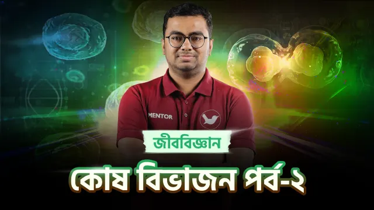
58:18 কোষ বিভাজন পর্ব-২ 2:36:36 বল পর্ব-৫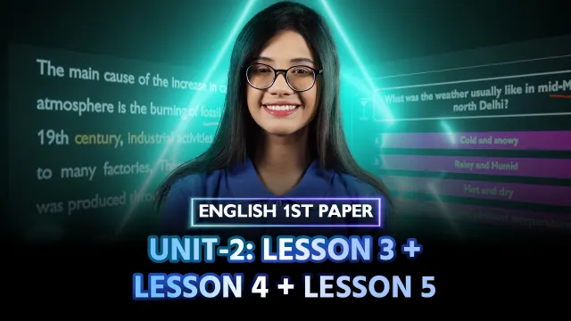
1:11:02 Unit-2: Lesson 3, 4 & 5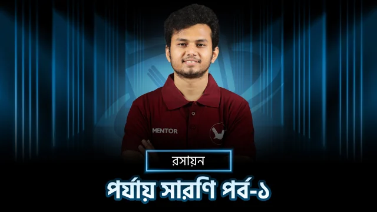
1:13:12 পর্যায় সারণি পর্ব-১ 1:11:32 পর্যায় সারণি পর্ব-২ 1:39:30 জীবকোষ ও টিস্যু পর্ব-২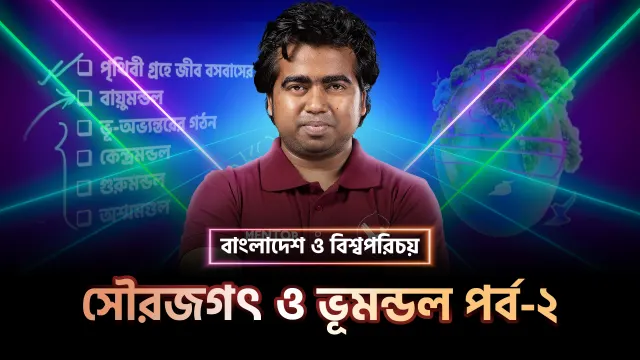
1:12:24 সৌরজগৎ ও ভূমণ্ডল পর্ব-২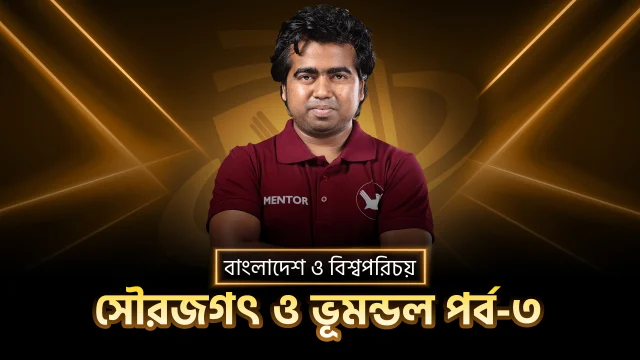
1:15:46 সৌরজগৎ ও ভূমণ্ডল পর্ব-৩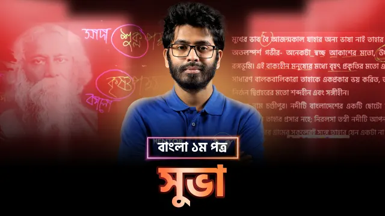
49:16 সুভা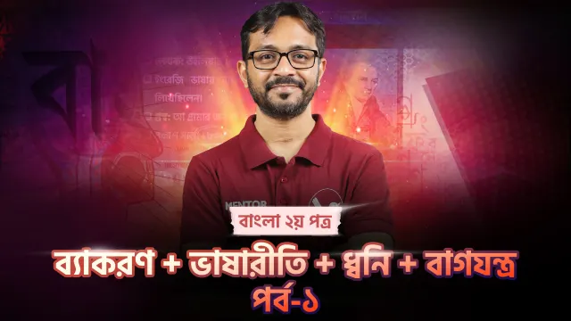
1:12:14 ব্যাকরণ, ধ্বনি ও ভাষারীতি ১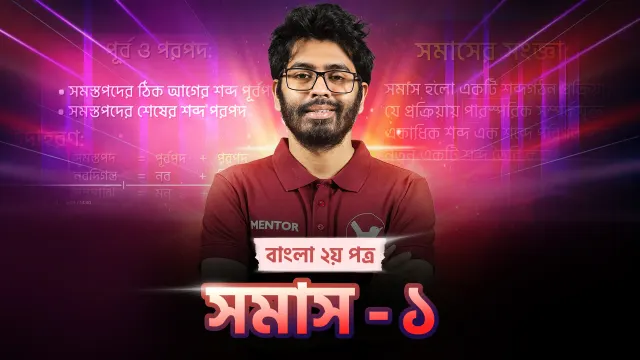
1:15:30 সমাস-১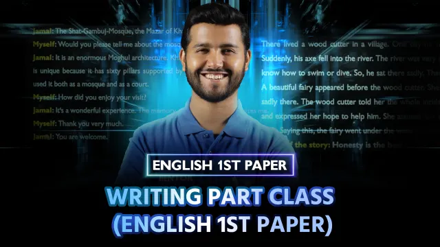
1:00:54 Writing Part Class 1:43:12 সেট ও ফাংশন পর্ব-৩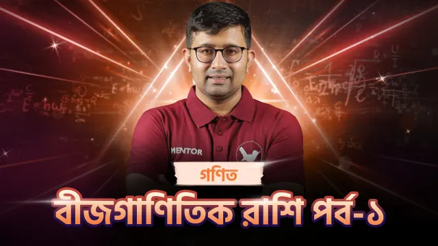
1:24:06 বীজগাণিতিক রাশি পর্ব-১ 1:16:38 আমার লেখালেখি ও হিসাব পর্ব-২ 1:17:42 লেখালেখি-হিসাব(Board Solve) 40:23 বই পড়া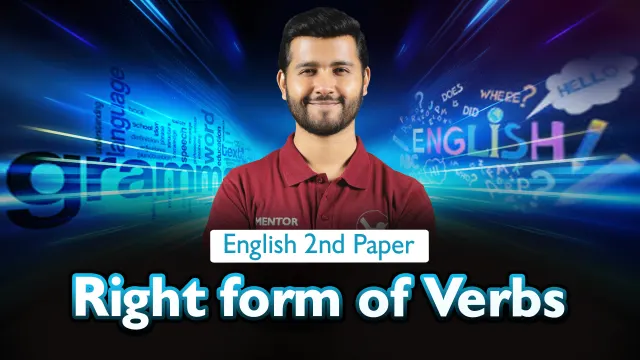
54:33 Right form of Verbs 59:29 ত্রিকোণমিতি পর্ব-০১ 59:51 ত্রিকোণমিতি পর্ব-০২ 1:06:31 ত্রিকোণমিতি পর্ব-০৩ 54:16 ত্রিকোণমিতি পর্ব-০৪ 54:22 ত্রিকোণমিতি পর্ব-০৫ 2:29:08 জীবকোষ ও টিস্যু পর্ব-০১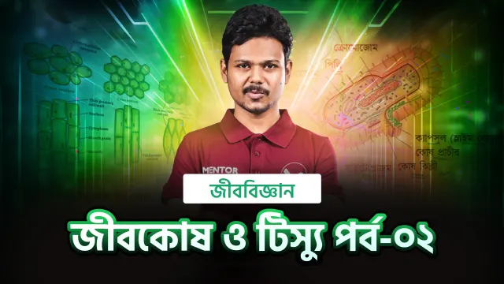
1:17:26 জীবকোষ ও টিস্যু পর্ব-০২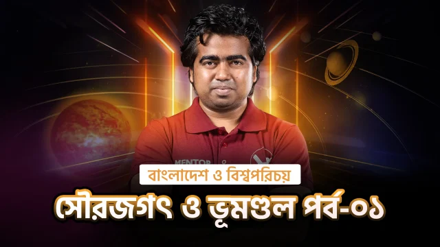
51:05 সৌরজগৎ ও ভূমণ্ডল পর্ব-০১ 43:45 সৌরজগৎ ও ভূমণ্ডল পর্ব-০২ 1:06:44 সৌরজগৎ ও ভূমণ্ডল পর্ব-০৩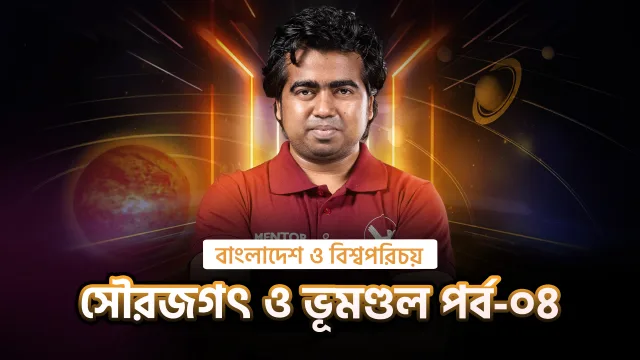
1:00:29 সৌরজগৎ ও ভূমণ্ডল পর্ব-০৪ 40:12 সৌরজগৎ ও ভূমণ্ডল পর্ব-০৫ 53:35 সৌরজগৎ ও ভূমণ্ডল পর্ব-০৬ 50:45 বাংলাদেশের নদ-নদী ও প্রাকৃতিক সম্পদ পর্ব-০১ 19:16 বাংলাদেশের নদ-নদী ও প্রাকৃতিক সম্পদ পর্ব-০২ 21:32 বাংলাদেশের নদ-নদী ও প্রাকৃতিক সম্পদ পর্ব-০৩এই বিষয়ের কোনো ক্লাস এখন নেই